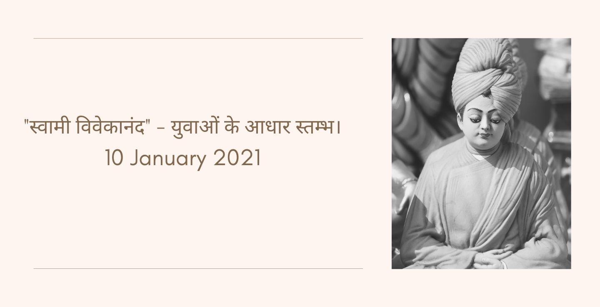

"विश्वास" 8 February, 2021

ईश्वर इस जगत का पालन हार है ऐसा माना जाता है कि ईश्वर ही सभी प्राणीयो का कर्ता- धर्ता है उसकी इच्छा से ही जगत के जीव की रक्षा होती है 🕉️🕉️🕉️🕉️🌱🕉️ एक बार एक किसान अपने गायों को जंगल में चराने जाया करता था, एक दिन उसकी एक गाय चरते- चरते अपने झुण्ड के अन्य मवेशियों से बिछड़ गयी और जंगल में भटकने लगीं। 🐗🐗🐾🐾🐾🏇🏇 वह इधर-उधर अपने साथी मवेशियों की खोज घूम रही थी । शाम होने वाली थी तभी उसकी निगाह एक बाघ पर पड़ी जो दबे पाँव 🐾🐯🐾उसकी ओर आ रहा था वह भय के मारे भागने लगीं और वह भी उसके पीछे-पीछे भाग रहा था , अंत मे जब उसने देखा कि बाघ उसे पकड़ लेगा तो वह पास के एक तालाब में कूद गयी तालाब कीचड़ से भरा था , बाघ भी उसे पकड़ने के लिए तालाब में कूद गया और दोनों ज्यों-ज्यों आगे बढ़ने की कोशिश करते त्यों-त्यों कीचड़ मे धंसते जा रहे थे जब उनके निकलने का कोई रास्ता नहीं दिखाई दिया तो दोनों धंसते-धंसते एक दूसरे के पास आ गये और बाघ चाहकर भी गाय को नहीं पकड़ पा रहा था 🙄🙄🌱🙄🙄🌹🥨 उसका शिकार उसके पास था, तो गाय ने उससे कहा " तुम्हारा कोई मालिक है " 🐯🥨🌹 बाघ ने गुर्रा कर बोला मैं तो जंगल का राजा हूँ मेरा कोई मालिक नहीं है बल्कि मैं ही पूरे जंगल का मालिक हूँ मेरी इच्छा के बिना यहाँ कोई नहीं आ सकता, तो गाय ने कहा कि 🐗🐗😔🐗🐗🌹🌹🐾 मेरा तो मालिक है जो मुझे ढूँढते-ढूढते यहा जरूर आयेगा और मुझे इस दलदल में से बाहर निकालेगा मेरा ऐसा विश्वास है। दोनों कतार नजर से एक दूसरे को देख रहे थे। 🏇🏇🏇🏇🏇🏇🏇🏇🏇 इतने में किसान ढूढते-ढूढते वहा आ गया उसने गाय को कीचड़ से बाहर निकाल दिया और बाघ कातर नजर से उसे देख रहा था। ठीक इसी प्रकार समर्पित हृदय वाले व्यक्ति इस माया रूपी संसार से पार हो जाते है जबकि अहंकारी व्यक्ति अपने मद में अहंकार से चूर रहता है और माया रूपी कीचड़ के दलदल में फंसा रहता है 🏇🏇🏇🕉️🏇🏇 गाय समर्पित जीव का प्रतीक बाघ,अहंकारी जीव का प्रतीक मालिक, ईश्वर गुरु का प्रतीक कीचड़, माया रूपी संसार संघर्ष, मानव अस्तित्व की लड़ाई। 🌹🌹🐾🔥🌹🌹
"नेताजी सुभाष चन्द्र बोस" 24 January, 2021

आत्मविश्वास एवं इच्छाशक्ति भी एक प्रकार का शस्त्र है । जिसे इस शस्त्र का समुचित प्रयोग करना आ गया वह विश्व का सबसे बड़ा योद्धा है। 🤺🤺 ।अतः विश्व में उन्ही महा नायकों का नाम सम्मान के साथ लिया जाता है जिन्होंने समाज एवं राष्ट्र के लिए अपने हितों को त्याग कर राष्ट्रीय हित के लिए अपने पारिवारिक दायित्व निर्वहन का त्याग किया है। 🥀 भारत देश महानायको,मनीषियों संतो एवं वीरों की भूमि है। प्राचीन काल से भारत विश्व गुरु रहा है, जिसने अपनी भव्यता के लिए सम्पूर्ण विश्व को अपनी तरफ आकर्षित किया है। मध्य काल में विदेशी लोगों को यहां आने के लिए प्रेरित किया। । अंग्रेज यहा व्यापारी के रूप में आये यहा के निवासी में फूट डाल कर यहा की आनतरिक व्यवस्था में मतभेद डाल कर यहा की शासन व्यवस्था पर अधिकार कर लिया और यहा के निवासीयो को प्रताड़ित करने लगे, उनकों यहा से हटाना असंभव लगने लगा तो ,भारत भूमि ने सदी के महानायको को जन्म दिया है जिन्होंने अपने विचारों से, कार्यो से अंग्रेजो को भारत को स्वतंत्र करने के लिए विवश कर दिया 🏇🏇🏇🏇👑 उन्ही महानायक में नेता जी सुभाष चन्द्र बोस का नाम बड़े आदर से लिया जाता है। इनका जन्म 23 जनवरी 1897 ईसवी को उड़ीसा के कटक नामक स्थान पर हुआ था। इनके पिता जी का नाम जानकी नाथ बोस एवं माता जी का नाम प्रभावती दत्त था इनके पिता उस समय वकालत कार्य करते थे, उनसे कुल 14 बच्चे थे जिसमें सुभाष जी नौवें संतान थे। ये बचपन से ही होनहार थे, पढने-लिखने में बहुत ही चंचल थे। 1913 ईसवी में इनहोने मैट्रिक की परीक्षा पास की। 1918ईसवी में बी॰ए॰की परीक्षा पास की। इनके पिता जी की इच्छा थी कि उनका बालक सिविल सर्विस करे अतः उन्होंने सुभाष जी को इंग्लैंड पढने के लिए भेज दिया, उन्होंने पिता जी को निराश नहीं किया वहा पर भी दिखा दिया कि उनका बच्चा किसी से कम नहीं है। सिविल सर्विस की परीक्षा में इनका चौथा रैंक था। परन्तु इनसे अपने देश वासियों की दुर्दशा नहीं देखी गई इन्होंने नौकरी को त्याग कर राष्ट्रीय आन्दोलन में कूद पड़े। इनके विचारों का इतना प्रभाव पड़ा कि इन्हें 1923ईसवी में युवा कांग्रेस का अध्यक्ष चुना गया, इन्होने स्वराज नामक पत्रिका निकाली, जिसमें ये क्रान्तिकारी विचारों को निकालते थे, इस समय वह बाबू चितरंजन दास से बहुत प्रभावित हुए थे। 927ईसवी मे इनको कांग्रेस का जनरल सेक्रेटरी बना दिया गया। जिसके लिए इनको कई बार जेल जाना पड़ा । जब उनको लगा कि यहा से भारत मा को बन्धन मुक्त कराना मुश्किल है तो1930 ईसवी में यूरोप चले गये वहा से जर्मनी जाकर हिटलर से मदद मांगी जिसके लिए वह तैयार भी हो गया था फिर जापान गये इण्डियन नेशनल आर्मी को संगठित किया और जापान की मदद से आजाद हिन्द फौज की स्थापना की। जिसने अंग्रेजों से लड़ाई लडी ।और उनको कइ जगह हराया भी।परन्तु 945ईसवी में जापान के हार जाने के कारण नेताजी के अभियान को धक्का लगा। उनका स्लोगन था, " तुम मुझे खून दो मैं तुम्हें आजादी दूंगा। "👑🔥🔥🔥🔥🔥🔥 और दिल्ली चलो। 🏇🏇🎯 आज हम उनके जन्म दिवस पर ऐसे महान नायक को शत्-शत् नमन वंदन करते हैं जिन्होंने अपने विचारों एव कार्यो से भारत को स्वतंत्र कराने के लिए जीवन भर संघर्ष किया। भारत सरकार उस महानायक के जन्मदिन को पराक्रम दिवस के रूप में मनाते हुए उनको श्रद्धांजलि अर्पित कर रही है। 💪🏇🏇🏇🏇🏇🏇💪✍🌹🌹🌹🌹🌹🌹✍
"गुरु गोविन्द सिंह" 20 January, 2021

गुरु गोविन्द सिंह जी ने अपने विचारों से मानव समाज को प्रभावित किया है। 🏇🏇🏇 गुरु जी का जन्म 22 दिसम्बर सन् 1666 ई को पटना साहिब में हुआ था। इनके पिता जी का नाम गुरु तेग बहादुर सिंह था जो सिख सम्प्रदाय के नौवें गुरु थे , इन्हें "हिन्द की चादर कहा जाता है। "🥯🥯🥯🥯🥯 इन्होंने हिन्दुओ के धर्म की रक्षा के लिए औरंगजेब के धार्मिक विचारों से कश्मीरी पंडितों की रक्षा के लिए अपने प्राण त्याग दिए परन्तु इस्लाम धर्म को नहीं कबूला। उस समय गुरु जी केवल नौ वर्ष के बालक थे,उनके जीवन पर इस घटना का बहुत बहुत गहरा प्रभाव पड़ा ,जब उन्हें गुरु गद्दी सौपी गयी तब उनकी उम्र केवल नौ वर्ष थी। उन्होंने बचपन से ही घुड़सवारी एवं शस्त्र की शिक्षा सीखी और अपने पिता के बलिदान का बदला लेने के लिए एक सेना का गठन किया जिसमें सभी जातियों के लोगो को सम्मिलित किया। अपने विचारों से उस समय के धार्मिक कट्टरता से समाज की रक्षा करने के लिए एक दल का गठन किया जिसमें समर्पित युवक सम्मिलित किया। एक बार गुरु जी ने अपने विचारों से दल के सदस्यों की परीक्षा लेने के लिए एक विशेष स्थान पर ले गए और उनसे कहा कि," आज मुझे ऐसे युवक कीं आवश्यकता है जो मेरे लिए अपने प्राण की आहुति दे सकता है " तो चारों तरफ सन्नाटा छा गया फिर एक युवक साहस करके उठा और बोला गुरु जी मै आपके लिए अपने प्राण दे सकता हूँ गुरु जी उस युवक को अपने डेरे मे ले गए और कुछ समय बाद डेरे में से खून की धारा बह निकली बाहर सन्नाटा छा गया गुरु जी खून से सनी तलवार लेकर बाहर निकलने और बोले मुझे और खून चाहिए कोई मेरे लिए खून दे सकता है फिर एक युवक उठा जिसे लेकर गुरु जी डेरे में गये और फिर खून की धारा बह निकली 🔥🔥🔥🔥🔥🔥 इस प्रकार पाँच युवक गुरु जी के लिए अपने प्राण देने के लिए तैयार हुए और हर बार खून की धारा बह निकली। अंत में गुरु जी उन पाँचो युवकों के साथ बाहर आये तो लोगों को आश्चर्य हुआ तो उन्होंने कहा कि मैं आप लोगों की परीक्षा ले रहा था। ।🏇🏇🏇🏇🏇🌱🔥🐾🐾🐾🐾🐾🔥उनका उन्होंने नामकरण किया "पंच प्यारे " इस प्रकार उन्होंने साहसी युवकों का चयन किया और सुल्तान के खिलाफ 👑अपनी आवज उठायी गुरु जी औरंगजेब के खिलाफ गुरिल्ला युद्ध छेड़ दिया। 🏇🏇🏇🔥 औरंगजेब के खिलाफ गुरिल्ला युद्ध करते हुए गुरु जी के दो पुत्र शहीद हो गए तो अंत मे हार कर सुल्तान ने इनके दो छोटे पुत्रों और इनकी पत्नी को बन्दी बना लिया और उनसे इस्लाम धर्म कबूल करने के लिए दण्डित करने लगा दिसम्बर की सर्द रात में वे ठिठुर रहे थे परन्तु इस्लाम धर्म नहीं कबूला अंत मे हार कर सुल्तान ने इनके इनके दो छोटे पुत्रों को जिन्दा दीवार में चुनवा दिया 😔😔😔😔😔😔 इनके स्वाभिमानी पुत्रों ने अपने प्राण त्याग दिए परन्तु इस्लाम धर्म को नहीं कबूल किया। गुरु जी अपने बाद गुरु ग्रंथ साहिब को गुरु मान कर गुरु परम्परा का अंत किया ये सिक्खों के दसवें और अन्तिम गुरु थे जिन्होंने मुगलों के धार्मिक कट्टरता से हिन्दुओं की रक्षा की अपना और अपने परिवार की आहुति दे कर भारत देश के स्वाभिमान की रक्षा की भारत देश ऐसे महान पुरुष को हमेशा याद रखेगा आज 20 जनवरी को गुरु जी को स्मरण कर हमे इनके त्याग और बलिदान के लिए इनको शत्-शत् नमन वंदन है 🔥👏👏👏👏👏🕉️🕉️🕉️🕉️🕉️
"गुरु नानक देव जी की सीख" 18 January, 2021

गुरु नानक देव जी का जन्म तलबन्दी ननकाना साहिब मे हुआ था। नानक देव जी बचपन से ही होनहार थे, घर से मिले हुए पैसो से ये दीन दुखियों की सेवा किया करते थे, इनका मन पढ़ने लिखने मे नही लगता था 🍹🍭 यें बचपन से ही 🍭🍹होनहार थे ये हमेशा ध्यान मग्न 😌😌 रहते थे तो इनके पिता जी को बड़ी चिंता हुयी उन्होंने अपने व्यवसाय में उनकों लगा दिया लेकिन ये तो हमेशा गरीबों की सेवा किया करते थे, और घर से मिले हुए धन को दीन दुखियों की सेवा में लगा दिया करते थे। एकबार की बात है गुरु जी अपने शिष्यों के साथ कहीं यात्रा पर जा रहे थे तो रास्ते में एक घना जंगल था उसके आस-पास कोई ठहरने का जगह नहीं था कुछ दूर जाने पर एक गाँव मिला तो उनके शिष्यों ने कहा,"गुरु जी अंधकार हो गया है और हमलोग थक गये हैं हमे यही विश्राम कर लेना चाहिए अगले दिन हमलोग फिर यात्रा पर निकलेगे।"😔 गुरु जी ने कहा ठीक है और पास के ही एक घर में गये और उनसे अपनी बात कही तो उसने कहा कि महाशय जी हम आपलोगों को पहचानते नहीं है अतः कैसे हम आप लोगों के रहने और भोजन का प्रबन्ध करे मै ऐसा नहीं कर सकता हूँ। तो गुरु जी गाँव के कई घरों में गये परन्तु किसी ने उनलोगों को आश्रय नहीं दिया रात्रि होने के कारण गुरु जी आगे न जा सके और खुले आसमान में बिना भोजन के रात्रि विश्राम किया। 🙄और अगले दिन सुबह होने पर उठे तथा ईश्वर से प्रार्थना की "हे प्रभु इस गांव के निवासी हमेशा इसी गाँव में सुख पूर्वक रहे। "और अपनी यात्रा पर निकल पड़े 🐾🐾🐾🐾🐾। जाते-जाते वे लोग काफी थक गये थे अगले दिन वे लोग दूसरे गाँव में पहुँचे जहां के लोगों ने उनकी खूब सेवा सत्कार कीं उनके भोजन का अच्छा प्रबन्ध किया और अच्छे-अच्छे विश्राम का प्रबन्ध किया जब सुबह हुआ तो गाँव वालों ने गुरु जी से यही रहने का आग्रह किया परन्तु गुरु जी को आगे अपनी यात्रा पर था अतः उन्होंने ईश्वर से प्रार्थना की, " हे प्रभु इस गांव के निवासी पूरे देश में फैल जाय और सुखमय जीवन व्यतीत करे।" यह सुनकर उनके शिष्यों ने कहा कि हे गुरु जी आपका कथन हमलोगो के समझ में नही आया आपने उन लोगों के लिए ईश्वर से अच्छा आशीर्वाद माँगा,जिन्होंने हमलोगो के साथ गलत व्यवहार किया और जिसने अच्छा किया उन लोगों को पूरे देश में फैल जाने के लिए कहा ऐसा भला क्यो? गुरु जी ने अपने शिष्यों को समझाते हुए कहा कि अगर बूरे लोग पूरे देश में फैल जायेगे तो उनकी बुराइया पूरे देश में फैल जायेगी और पूरे देश कीं क्षति होगी और यदि अच्छे लोग पूरे देश में फैल जायेगे तो सम्पूर्ण देश का भला होगा ।👍🌱🌹 गुरु जी ने अपने विचारों से मानव समाज को प्रभावित किया है। आज पूरा देश इन महापुरुषों का ऋणी है। हमे हमेशा सकारात्मक सोच रखनी चाहिए जिससे केवल अपने समाज का ही नहीं बल्कि सम्पूर्ण जीव-जगत का कल्याण हो सके।🌹🌹🌱🔥🌱🔥🌱🌹🕉️🕉️🕉️🕉️🕉️🕉️🕉️🕉️
"मन एवं जीवन" 18 January, 2021

मानव समाज में व्याप्त अच्छाईयों एवं बुराइयों का मानव पर प्रभाव अदृश्य, अद्भुत, अद्वितीय पड़ता है। 🌱जीवन के प्रथम चरण में बच्चे जिस वातावरण और परिवेश में वह निवास करता है उसका उसके जीवन में अद्भुत प्रभाव पड़ता है, उसे अपने जीवन को तराशने के लिए हमेशा प्रयत्न करते हुए अपने भविष्य के लिए संघर्ष करते रहना पड़ता है जिस पर उसके मन का अमिट प्रभाव पड़ता है एक बार आदमी अपने जीवन में परिश्रम करते हुए भी अपने जीवन लक्ष्य को प्राप्त करने में असफल हो रहा था, उसने सोचा कि ऐसा क्यों हो रहा है जब उसे लक्ष्य तक पहुंचने का कोई रास्ता नहीं दिखाई दिया तो उसे एक पास के जंगल में एक महात्मा के बारे मे पता चला जो लोगो के सभी समस्याओं का उचित समाधान बता दिया करते हैं वह उनके पास गया और उनसे अपनी समस्या बताई उन्होंने उसकी बातों को सुना और अपने कार्यो में व्यस्त हो गए,वह व्यक्ति पास ही खड़ा रहा और अपने उत्तर की प्रतीक्षा करने लगा। 😌जब महात्मा अपने कार्य को समाप्त कर दिया तो उसने फिर अपनी बात कही और पास ही बैठ गया, तो उन्होंने उसे एक मिट्टी का घड़ा लाकर दिया और कहा कि इसमें कुछ मिट्टी डाल दो उसके कथन के अनुसार व्यक्ति ने वैसा ही किया। तो उन्होंने कहा कि अब इसमें पानी डाल दो तो उसने उसमें पानी डाल दिया तो उन्होंने पूछा कि यह पानी क्या पीने योग्य है ! 🔥😔🔥 तो उस व्यक्ति ने मुस्कुरा कर कहा कि आपने तो इसमे मिट्टी डलवा दी है यह तो पानी भला कैसे पीने लायक हो सकता है? तो महात्मा ने कहा कि अब तुम्हें पास के सरोवर से पानी लाकर इसे पीने योग्य बनाना है ,वह व्यक्ति पास के सरोवर से पानी लाकर उस घड़े में डालने लगा और पानी से घड़ा भर गया। तो महात्मा ने कहा कि इसमें तब तक पानी डालते रहो जब तक यह पानी पीने योग्य न हो जाय,😌😌😌😌😌😌 व्यक्ति सोच में पड़ गया कि महात्मा जी क्या चाहते हैं क्या मिट्टी डाले हुए घड़े में पानी डालने से पानी पीने योग्य हो सकता है?🔥🔥😔 🔥🔥 पर उसने उनके कथन के अनुसार पानी डालता रहा धीरे-धीरे मिट्टी के छोटे-छोटे कण बाहर निकलने लगा और पानी पहले की अपेक्षा अब थोड़ा साफ होने लगा , तो व्यक्ति ने कहा कि कि महात्मा जी इस प्रकार तो इसमे बहुत बहुत समय लगेगा 🌹🌹😔 अंत मे महात्मा ने उसे समझाया कि मानव जीवन में मिट्टी के छोटे-छोटे कण के समान बुराइया भरी रहती है हमे इसे साफ़ करने के लिए हमेशा अच्छे विचार रूपी पानी डालते रहना चाहिए जो व्यक्ति ऐसा करते रहते हैं उन्हे सफलता रूपी पानी प्राप्त होती है और जो इसे बीच में ही छोड़ देते है उन्हे बुराइया घेरे रहती हैं अतः हमें हमेशा अपने जीवन को सफल बनाने के लिए अच्छे विचार रूपी पानी डाल ते रहना चाहिए 🌱🌹🌱🏇🏇🏇🏇🏇
"आत्मविश्वास - कर्म" 14 January, 2021

"कदम चूम लेगी खुद आकर मंजिल, मुसाफिर अगर हिम्मत न हारे" 🏇🏇🏇🏇🏇 संसार में ऐसे-ऐसे लोग पैदा हुए है जिन्होंने अपने विचारों एव कार्यो से समाज को प्रभावित किया है। समाज हमेशा उन लोगों को सम्मान देता है जिन्होंने सफलता की मंजिल प्राप्त कर ली है उनके संघर्षों के समय उनको न तो सम्मान देती है न उनकी मदद के लिए आगे आती है 😔😔😔😔😔🌱 जब वह समाज के भंवर में सफलता पाने के लिए संघर्ष कर रहा होता है। अगर मानव में आत्मविश्वास हो तो वह असंभव कार्य को भी सम्भव कर देता है ईश्वर हमेशा उन्ही लोगों की मदद करता है जो अपनी मदद करनें के लिए स्वयं आगे कदम बढ़ाते हैं 🌱 यह कहानी अरून बजाज की है जो एक दर्जी का लड़का है, जो अपने बचपन में ही अपने पिता जी को खो दिया है समाज के लोग उसे ताने मारते थे,कि दर्जी का लड़का क्या कर सकता है वह अपने बचपन से ही होनहार था जब वह12 वर्ष का था तो वह अपनी पढाई के साथ-साथ अपने पिता जी के दुकान पर भी उनके कार्यो मे अपना हाथ बटाटा था जब वह 16 का था तो उसके पिता जी का देहान्त हो गया , परिवार के भरण-पोषण के जिम्मेदारी छोटे से अरून के कंधों पर आ गयी 😔😔🌱😔😔✍️ जब उसके पढने का समय था तो वह समाज के लोगों द्वारा ताने सुन रहा था , परन्तु वह समाज के लोगों के ताने को अपने लिए एक अवसर के रूप में लिया और निश्चय कर लिया कि यही समाज एक दिन मेरी बड़ाई करेगा और मेरे किए गए कार्यो को मानेगा। वह बचपन से ही इम्बर्डररी कार्य करता था बचपन के दिनों में वह अपने साथी बच्चों के चित्र बनाया करता था । जब उसके पिता ने उसका साथ छोड़ दिया तो वह अपने पेशे का काम करता और रात-रात भर बैठ कर काम किया करता था उसके घर पर खाने के लिए कुछ नहीं था, परन्तु वह तो अपने धुन का पक्का था उसने यह ठान लिया कि एक न एक दिन वह जरूर अपने लक्ष्य को प्राप्त कर लेगा 👑👑👑👑👑👑💪👑👑👑🥀🥀 एक दिन स्वप्न में उसे यह ख्याल आया कि वह गुरु नानक देव जी की एक प्रतिमा (पोर्टेबल चित्र) बनायेगा वह उधार के पैसे से धागा लाकर अपना काम शुरू किया जिसे पूरा करने मे उसे एक सप्ताह का समय लगा ।जब यह बनकर तैयार हुआ तो धीरे-धीरे उसके कार्यों की प्रशंसा होने लगी फिर उसने भगवान श्री कृष्ण का चित्र बनाया जिसे बनाने मे उसे तीन साल का समय लगा और जिसके बनते ही उसके नाम से पांच-पांच विश्व रिकॉर्ड बन गए। 👑👑👑🌷👑👑👑फिर उसने महाराजा रणजीत सिंह के दरबार का चित्र कपड़े पर बनाया जिसमें हाथी, घोड़े, एवं किला का चित्र बनाया। उसको माननीय प्रधान मंत्री मोदी जी ने उसे संसद भवन में बुला कर उससे भेंट की और उसके कार्यों की प्रशंसा की। आज वही दर्जी का लड़का अपने जुनून एवं लगन,आत्मविश्वास से सफलता की मंजिल प्राप्त कर ली। 🧜♂️🧜🏻♀️
"मकरसंक्रांति" 14 January, 2021

भारत धार्मिक विचारों वाला देश है यहा के निवासी अपने प्रत्येक कार्य को ईश्वर को समर्पित करते
रहे है ,यहाँ वर्ष भर
कोई न
कोई पर्व भारत के किसी न किसी भूभाग पर भिन्न, -भिन्न नामोसे मनाया जाता है है, पर्व मानव जीवन
मे उत्साह, प्रेरणा
भरते हैं
जिससे उनके आत्म विश्वास की वृद्धि होती है यह विश्वास कार्य के रूप में परिलक्षित होती है।
सूरज,सम्पूर्ण ब्रहमांड मे उर्जा का स्रोत है यह अपनी उर्जा को प्रकाश एवं गर्मी के रूप मे
पृथ्वी पर विखेरती हैं जो
सभी
जीवों के जीवन का मूल है ब्रहमांड में सभी ग्रह सूर्य की परिक्रमा करते हैं ।🔥🌱🔥
भारत में इस समय सूर्य दक्षिणायन से उत्रायण मे प्रवेश करते हैं मकर रेखा को पार करते है जिससे
भारत के भूभाग पर
उर्जा की
अधिकता होने लगती है और दिन दिनोंदिन बढने लगता है और प्रकाश की अधिकता होने लगती है जिसके कारण
कार्य का समय बढ
जाते है
,जाड़े से लोगों को राहत मिलने लगती है 🔥
भारत में यह बात धार्मिक विचारों से जोड़ दिया गया है 🌱🔥यहाँ पर यह मान्यता है कि इसी दिन
भगवान सूर्य अपने पुत्र
भगवान
शनिदेव से मिलने उनके घर मकर मे जाते है जिसे हम मकरसंक्रांति के रूप में मनाते हैं ।
भारत के भिन्न-भिन्न राज्यों में इस पर्व को भिन्न-भिन्न नाम से मनाते है पंजाब एव हरियाणा में
इस पर्व को लोहिणी के
नाम से
मनाते है यह पर्व भारत के निवासीयो के जीवन मे उत्साह, प्रेरणा एवं आत्मविश्वास को बढाता है
✍️✍️🔥🔥
उत्साह एवं प्रेरणा मानव जीवन मे विश्वास भर देता है।
इस पर्व पर लोग अपने-अपने रिश्तेदारों के यहां जाते है और उनको भेट स्वरूप लाई चूड़ा तिल, गुड
ले जाते है जो भाई
चारा एव
प्रेम को बढाता है 🤝
यह पर्व माघ मास में मनाया जाता है जो सदियों से मानव जीवन को दूर करने का प्रारम्भ होता है
🧜🏻♀️🌷🧜♂️
"स्वामी विवेकानंद" - युवाओं के आधार स्तम्भ। 11 January, 2021
भारती समाज में ऐसे योग्य एवं प्रेरक महा पुरुष पैदा हुए है जिन्होंने अपने विचारों से न केवल भारतियों को बल्कि सम्पूर्ण मानव समाज को प्रभावित किया है 🧠🧠। आज के वर्तमान समाज सम्पूर्ण मानव जाति को जिसने प्रभावित किया है वह है स्वामी विवेकानंद जिनके प्रेरक विचारो ने सम्पूर्ण विश्व को प्राचीन काल से प्रभावित किया है। 💪💪 । स्वामी जी का जन्म 12जनवरी 1863 ईसवी को कोलकाता में हुआ था, इनके पिता जी का नाम विश्वनाथ दत्त एवं माता जी का नाम भुवनेश्वरी देबी था। इनकी माता जी बड़े ही धार्मिक विचारों वाली महिला थी जिसका इनके जीवन पर अमिट प्रभाव पड़ा है । इनके जन्मदिन को "युवा दिवस "---------👬🏻 के रूप मे मनाया जाता है। स्वामी जी ने अपने विचारों से युवाओ को बहुत ही प्रभावित किया है । जब भारत गुलाम था तब इनहोने 11सितम्बर 1893 ईसवी को शिकागो के विश्व धर्म सम्मेलन में भारत के सनातन धर्म की ध्वजा लहराकर सम्पूर्ण विश्व का ध्यान भारत की ओर आकर्षित किया था, उनके भाषण की प्रथम पंक्तिया अमेरिका वासियों को मंत्र मुग्ध कर दिया था,जब उन्होंने कहा कि "अमेरिका के बहनों एवं भाइयों!!सम्पूर्ण हाल तालियों की गडगडाहाट से गूंज उठा 🧜🏻♀️🧜♂️🧚♀️🧚♀️🧚♂️ पूरा हाल खुशी से झूम उठा। ऐसे थे स्वामी जी!!!उनके प्रेरक विचार आज भी उतने ही प्रासंगिक है जितने उस समय थे। उठो जागो और तब तक नहीं रूको जब तक लक्ष्य न प्राप्त हो जाय ।🕉️🕉️ आज ये विचार हमारे युवा समाज के सफलता के लिए प्रेरक बना हुआ है। स्वामी जी के विचार 1- हमेशा लक्ष्य पर ध्यान रखो एक बार स्वामी जी कही जा रहे थे तो एक पुल पर कुछ बच्चे निशाना लगा रहे थे किसी का भी निशाना नहीं लग रहा था तो स्वामी जी ने बच्चों से बन्दूक लिया और एक-एक कर कई निशाने लगाये ।तो बच्चों ने स्वामी जी से कहा आप कैसे इतने सटीक निशाने लगा लेते हैं, तो उन्होंने कहा हमेशा लक्ष्य पर ध्यान रखो आप सफल हो जायेगे 😌😌😌😌😌 2-- डर के आगे जीत है!!! एक बार स्वामी जी दुर्गाकुण्ड से जा रहे थे तो कुछ बन्दर ने स्वामी जी को दौड़ लिया और स्वामी जी भाग रहे थे इसे देखकर एक वृद्ध संत ने कहा स्वामी जी आप इनका सामना कीजिए तो वे मुड़ और बन्दरो का सामना किया और बन्दर भाग खड़े हुए तो स्वामी जी कहा "डर के आगे जीत है " आज स्वामी जी का विचार प्रासंगिक है कि जब तक हम समस्याओ से भागते रहेगे तब तक वे हमारा पीछा करती रहेगी हमे समस्याओ का सामना करना ही पड़ेगा ??🧜🏻♀️🧜♂️🧚♀️ 3--हमेशा सच बोलना चाहिए- एक बार कीं बात है जब स्वामी जी छोटे थे और कक्षा में पढ़ते थे तो एक बार कुछ बच्चों को कहानिया सुना रहे थे कब अध्यापक कक्षा मे आकर पढ़ाने लगे किसी को पता नही चला तो अध्यापक ने एक-एक बच्चे से पढाये गये विषय से सवाल पूछा किसी बच्चे ने उत्तर नहीं दिया अंत मे स्वामी जी से वही सवाल किया तो उन्होंने सही जबाब दे दिया तो अध्यापक ने सभी बच्चो को बेन्च पर खड़ा होने का दण्ड दिया सभी बच्चे खड़े हो गए और अंत मे स्वामी जी भी खड़े हो गए तो अध्यापक ने स्वामी से कहा कि आप क्यों खड़े हो रहे हैं तो उन्होंने कहा कि मैं ही इन बच्चों को कहानिया सुना रहा था तो अध्यापक ने सभी बच्चो को बैठने के लिए कहा। ऐसे थे स्वामी जी जिन्होंने बचपन से ही सच बोलते थे जिससे हमे यह शिक्षा मिलती है कि हमे हमेशा सच बोलना चाहिए 😌😌😌😌😌👍
शब्द। 10 January, 2021

"शब्द भी एक तरह का भोजन है। "🥗🥗🥘🥗🥗।
किस समय कौन सा शब्द परोसना है, 🍳🍳🍳🍳🍳।
अगर वो आ जाये!!!
तो संसार में उससे बढिया,
रसोइया निर्माता कोई नहीं है।
'शब्द ' का भी अपना एक 'स्वाद '!
बोलने से पहले 'चख ' लीजिए---
अगर खुद को 'अच्छा ' न लगे तो
दूसरो को कैसे अच्छा लगेगा!!!😌😌😌😌😌😌😌😌
मानव समाज में व्याप्त अच्छाईयों में शब्द भी एक अच्छाई है।🔥🔥🔥🔥
हमे अपने लक्ष्य को प्राप्त करने के लिए हमेशा अग्रसर रहना चाहिए। और समाज में संघर्ष करना
चाहिए जिसका जितना बड़ा संघर्ष
होगा उसकी जीत उतनी ही बड़ी होगी 🧜🏻♀️🧜🏻♀️
ईश्वर ने मानव के जीवन को दो हिस्सों में अलग-अलग बांट दिया है ।और उनके लक्ष्यों को दिया है
यदि व्यक्ति अपने प्रथम हिस्से
मे अपना श्रम कर लिया है तो वह अपने जीवन के दूसरे पक्ष को आराम से व्यतीत कर लेता है। यदि
प्रथम पक्ष मे मौज मस्ती करता है
तो उसे जीवन के दूसरे पक्ष में श्रम करना पड़ता है। यह कहानी उस दोस्तो की है जो एक साथ पढ़ने
के लिए साथ -साथ जाते थे एक ने
परिश्रम से अपना कार्य किया जबकि दूसरे ने उन दिनों अपना समय गपशप, सैर सपाटे मे व्यतीत किया।
समय गुजरने पर दोनों की शादी हो गई। दोनों अपने परिवार के भरण-पोषण के लिए एक दूसरे शहर में आ
गये । पहला व्यक्ति एक शहर मे
आ गया और
✍ वह एक जज बन गया और अपने परिवार का भरण-पोषण आराम से करने लगा और सुखमय जीवन व्यतीत करने लगा।
दूसरे मित्र का कही चयन नहीं
हुआ और अंत मे उसे अपने परिवार के भरण-पोषण के लिए कोई विकल्प न होने के कारण वह अपने गाँव मे
आकर खेती बाड़ी करने लगा और
उसे उन दिनों की याद आने लगी जब वह अपने दोस्तों क साथ पूरा समय गपशप में बीता देता था अब उसके
पास इतना समय नहीं होता था कि
वह किसी से बात कर सके एक बार खेत का लगान न जमा होने के कारण उसको जेल भेज दिया गया और उसकी
पेशी जज साहब के सामने हुआ तो
जज ने उससे पूछा कि समय लगान क्यों नहीं जमा किया तो उसने कहा कि महाशय जी बहुत परिश्रम करने के
बाद भी इतने पैसे नहीं होते
हैं कि मै समय से लगान जमा कर सकता हूँ । बहस के दौरान जज साहब उसे पहचान गये कि यह तो उसके
बचपन का दोस्त है ।उन्होंने उसे
लगान न जमा होने के कारण एक दिन की सजा सुनाई। और अपने आवास पर आ गये। ✍✍
जब उसकी सजा पूर्ण हुआ तो उसे लगान भरने के लिए उसकी मदद की और उसे उन दिनों की याद दिलायी जब
वह बचपन में मौज मस्ती किया
करता था। उसे
इसका मतलब समझ में आ गया कि व्यक्ति को अपने जीवन में परिश्रम करना ही होगा आज नहीं तो कल।😌😌
अतः हमें समय का ध्यान रखते हुए अपने कार्यो को पूरा करना चाहिए। जीवन एक संघर्ष है हमे इसका
हमेशा स्मरण रखना चाहिए समय का
हम ध्यान नहीं रखेगे तो समय हमारा ध्यान नहीं रखेगा 🔥🥘🔥
गुरु जी की सीख। 9 January, 2021

एक धनी परिवार एक गाँव में रहता था। उस परिवार मे कोई संतान नहीं था, काफी दिनों से परिवार
संतान न होने से दुःखी था ।
एक दिन एक महात्मा उस
गाँव में आये तो उस परिवार की औरत वहा गयी,उसने महात्मा से अपनी व्यथा सुनाई तो महात्मा ने कहा
कि एक दिन आपको एक बच्चा
जरूर होगा आप दीन- दुखियों की सेवा किया कीजिए। कुछ दिन के बाद वहां एक बच्चा पैदा हुआ जो बहुत
ही सुन्दर फूलों जैसा था।
जो बचपन से ही होनहार था वह हमेशा गरीब एवं कमजोर अपने साथी बच्चों को परेशान किया करता था ।
एकबार की बात है वह अपने
गुरु जी की बात को ध्यान से सुनता था और उनके कथन के अनुसार काम किया करता था वह अपने गुरु के
साथ कही जा रहा था रास्ते
में एक स्थान पर उसे कुछ पुराने फटे हुए कपड़े दिखाई दिया जिसके पास ही एक जोड़ी जूता दिखाई
दिया ,जो फटा हुआ था और पास
ही एक खेत मे एक बूढ़ा किसान हल जोत रहा था। लडक़े के दि माग में एक शैतानी सूझती है और वह
उनकों एक झाडी में छुपा देता
है और आगे बढ़ जाता है ,तो उसके गुरु जी उससे पूछते है कि आपने ऐसा क्यों किया तो बच्चे ने कहा
कि " गुरु जी इससे क्या
हुआ यह तो फटा हुआ है जो सड़क के किनारे पडा हुआ है " गुरु जी ने उसे एक कहानी सुनाई जो है कि
जाड़े का मौसम था एक गरीब
किसान के पास कपड़े और जूते नही थे रात्रि में उसे अपनी फसल देखने अपने खेतों में जाना पड़ा और
कपड़े एवं जूते न होने के
कारण नहीं होने के वह बीमार पड़ गया और अंत मे मरते-मरते बचा ? 😔😔।बच्चा उसकी बात को ध्यान से
सुन रहा था तो गुरु जी
ने उससे कहा तुम्हें ऐसे लोगों की मदद करनी चाहिए!तो बच्चे ने कहा गुरु जी मै क्या करूँ तो
उन्होंने ने कहा चलो हम उसके
जूतों में कुछ पैसे डाल देते है इस प्रकार उसकी मदद हो जायेगी। बच्चा जाता है और गुरु जी कहे
अनुसार जूतों में 100-100
रूपये दो-दो नोट उन जूतों में डाल दिया और पास की झाडी में जाकर छिप जाता है। कुछ समय बाद किसान
आता है और अपने जूते में
पैर डालता है तो उसे कुछ होने का आभास होता है तो वह उसको देखता है तो उसे उसमें पैसे दिखाई
देता है वह उन पैसों को लेकर
दण्डवत नीचे बैठ कर अपने दोनों हाथों को जोड़ कर ईश्वर को धन्यवाद् देता है और कहता है कि आपने
मेरे बेटे की जान बचा ली
मै आपका बहुत-बहुत शुक्रिया अदा करता हूँ। यह देखकर बच्चे उपर बहुत प्रभावित हुआ उसने गुरु जी
को यह बात बतायी तो
उन्होंने ने कहा कि हमें ऐसे कार्य करना चाहिए जिससे समाज के कमजोर लोगों की मदद हो उनको हमारे
कारण समस्या नहीं होना
चाहिए।
निष्कर्ष -- समाज में ऐसे -ऐसे लोग भी है जो दूसरों के फेके हुए सामनो में अपने जीवन की
सम्भावनाये तलाशते है हमारे
कार्यो से उनकी मदद होनी चाहिए न कि उनको किसी प्रकार की परेशानी।
"दृष्टि हीनता"-लुई ब्रेल। 4 January, 2021

यह व्यक्ति के जीवन स्तर को समय के अनुसार उसे सोचने, समझने एवं अपने मन के भावों को अभिव्यक्त
करने के लिए अवसर उपलब्ध कराता है ।🧜🏻♀️🧜♂️। यदि व्यक्ति समय को अपने अनुकूल बदलने में
कामयाब रहा तो उसे जीवन लक्ष्य को प्राप्त करने में सफलता मिलती है। एकबार एक युवक एक सिद्ध
महात्मा के उपदेश से उतना प्रभावित हुआ कि उसने उनका शिष्य बनने का निश्चय किया और उनका शिष्य
बन गया। एकबार वह किसी गाँव में भिक्षा मांगने गया तो गाँव के एक बुजुर्ग किसान ने उससे कहा "
बेटा तुम तो जवान हो तुम्हें भिक्षा मांगने कीं क्या जरूरत है। " तो युवक ने कहा कि मै तो
महात्मा के लिए भिक्षा माँग रहा हूँ । मुझे इसकी कोई जरूरत नहीं है,कहा सुनी बढ़ गयी और युवक
बिना भिक्षा लिए वापस आ गया और यह बात महात्मा से कहा कि आप चलिए और उससे पुछिए कि उसने ऐसा
क्यों कहा तो महात्मा ने कहा कि ठीक है हम चलेगे? लेकिन युवक तुरन्त ही चलने का आग्रह किया तो
महात्मा ने कहा कि मै आपकी बात मान ली है हम कल चलेगे। युवक चला गया और रात्रि में सोचने लगा कि
वह किसान तो उसके पिता के समान है यदि उन्होंने ऐसा कह दिया है तो क्या हुआ हमे तो उसका
धन्यवाद् देना चाहिए उसे कुछ नहीं कहना चाहिए गलती तो मेरी ही है। यह सोचकर उसने महात्मा से कहा
कि महराज मै तो आपके प्रवचन से प्रभावित होकर अपने परिवार को छोड़ दिया था उस किसान ने मुझे
कर्तव्य बोध करा दिया ।जिस माता पिता ने मुझे यह मानव जीवन दिया जब उन्हें मेरी आवश्यकता है तो
मै उनके कन्धों पर अपने परिवार का दायित्व डाल दिया है अतः आप मुझे अब घर जाकर उनसे अपने अपराध
बोध को स्वीकार करके उनसे क्षमा मांगनी चाहिए ।तो महात्मा ने कहा कि अच्छा है तुम्हें अपने
कर्तव्य बोध का ज्ञान हो गया है अतः आपको अपने परिवार कि सेवा करनी चाहिए।
" समय " - समय चक्र प्रकृति प्रदत्त एक उपहार है। 4 January, 2021

यह व्यक्ति के जीवन स्तर को समय के अनुसार उसे सोचने, समझने एवं अपने मन के भावों को अभिव्यक्त
करने के लिए अवसर उपलब्ध कराता है ।🧜🏻♀️🧜♂️। यदि व्यक्ति समय को अपने अनुकूल बदलने में
कामयाब रहा तो उसे जीवन लक्ष्य को प्राप्त करने में सफलता मिलती है। एकबार एक युवक एक सिद्ध
महात्मा के उपदेश से उतना प्रभावित हुआ कि उसने उनका शिष्य बनने का निश्चय किया और उनका शिष्य
बन गया। एकबार वह किसी गाँव में भिक्षा मांगने गया तो गाँव के एक बुजुर्ग किसान ने उससे कहा "
बेटा तुम तो जवान हो तुम्हें भिक्षा मांगने कीं क्या जरूरत है। " तो युवक ने कहा कि मै तो
महात्मा के लिए भिक्षा माँग रहा हूँ । मुझे इसकी कोई जरूरत नहीं है,कहा सुनी बढ़ गयी और युवक
बिना भिक्षा लिए वापस आ गया और यह बात महात्मा से कहा कि आप चलिए और उससे पुछिए कि उसने ऐसा
क्यों कहा तो महात्मा ने कहा कि ठीक है हम चलेगे? लेकिन युवक तुरन्त ही चलने का आग्रह किया तो
महात्मा ने कहा कि मै आपकी बात मान ली है हम कल चलेगे। युवक चला गया और रात्रि में सोचने लगा कि
वह किसान तो उसके पिता के समान है यदि उन्होंने ऐसा कह दिया है तो क्या हुआ हमे तो उसका
धन्यवाद् देना चाहिए उसे कुछ नहीं कहना चाहिए गलती तो मेरी ही है। यह सोचकर उसने महात्मा से कहा
कि महराज मै तो आपके प्रवचन से प्रभावित होकर अपने परिवार को छोड़ दिया था उस किसान ने मुझे
कर्तव्य बोध करा दिया ।जिस माता पिता ने मुझे यह मानव जीवन दिया जब उन्हें मेरी आवश्यकता है तो
मै उनके कन्धों पर अपने परिवार का दायित्व डाल दिया है अतः आप मुझे अब घर जाकर उनसे अपने अपराध
बोध को स्वीकार करके उनसे क्षमा मांगनी चाहिए ।तो महात्मा ने कहा कि अच्छा है तुम्हें अपने
कर्तव्य बोध का ज्ञान हो गया है अतः आपको अपने परिवार कि सेवा करनी चाहिए।
निष्कर्ष--- समय ही सबसे बड़ा शिक्षक है शिक्षा हमे किसी से भी किसी से भी मिलती हैं।
सकारात्मक सोच का मानव जीवन पर रहस्यमयी प्रभाव। 4 January, 2021

मानव जीवन हमेशा से ही अपने सोच से प्रभावित होता रहा है। मानव जीवन जिसे वह अपने माता-पिता से
प्राप्त करता है। इस जीवन में मानव को भाग्य केवल उसी के लिए सफलता की राह प्रकाशित करता है
।जिनकी सोच सकारात्मक रही है। 👍💪👍।आज हम ऐसे व्यक्ति के बारे में बात कर रहे हैं। जिसे
रात्रि के अंधकार में आगे जाकर अपने माता-पिता से मिलना था जिसका घर उसके रहोने वाले स्थान से
दूर था, उन दिनों लोग पैदल ही यात्रा करते थे। आजकल की तरह प्रकाश के लिए केवल दीपक एवं लालटेन
का ही लोग उपयोग किया करते थे। जिसका प्रकाश केवल कुछ दूर तक ही दिखाई देता है। वह इस बात से
चिन्तित था कि वह रात्रि की यात्रा कैसे करेगा, उसे कोई ऐसा मार्ग भी नही दिखाई दिया। तो वह एक
महात्मा के पास गया तो उन्होंने उसे बताया कि कोई समस्या नहीं है, तुम्हारे साथ-साथ लालटेन की
प्रकाश भी तो चलेगी जैसे ही तुम एक कदम चलोगे प्रकाश भी एक कदम आगे बढ़ जायेंगी इस प्रकार
अंधेरा आपके रास्ते की बाधक नही बनेगी। यह उसके जीवन की सबसे बडी त्रासदी से बचा लेगा और तुरन्त
ही वह चल दिया, जैसे ही वह आगे बढ़ा उसने देखा कि लालटेन की रौशनी भी उसके साथ-साथआगे बढ़ रही
है। इस प्रकार उसने रात्रि के अंधेरे में अपनी यात्रा पूरी की। उसे यह बात अच्छी तरह समझ में आ
गयी। हमारे सकारात्मक सोच भी हमारे जीवन के अंधकार को लालटेन की रौशनी की तरह हमेशा हमारे
साथ-साथआगे चलते रहते हैं। हमे समस्या रूपी अंधकार से अपने लक्ष्य को हासिल करने में सफलता
प्रदान 🏇करते है।
निष्कर्ष-हमे हमेशा जीवन के समस्याओ को सकारात्मक सोच रूपी प्रकाश के साथ-साथ चलने का भाव रखना
चाहिए।
माता की चाह बेटे के प्रति। 27 December, 2020

आज के वर्तमान समाज में माता
अपने जीवन में अपने बालक की सुरक्षा और सफलता के लिए अपना सर्वस्व न्योछावर करने के लिए हमेशा
तत्पर रहती
हैं। भारत एवं विश्व का इतिहास इससे भरा है। महान माताओ
ने अपनी चतुराई एवं बुद्धिमत्ता से अपने बालक की राह मे अविस्मरणीय योगदान दिया है । जिसने
विद्यालय द्वारा अयोग्य घोषित किये गये बालक को सदी का महान वैज्ञानिक बना दिया । यह कहानी सदी
के वैज्ञानिकों में नायक वैज्ञानिक
एडिसन की है। बालक एडिसन बचपन से ही जिज्ञासु स्वभाव
के होने के कारण विद्यालय में हमेशा अपने शिक्षक से
समाज में होने वाले कारणों को जानने की कोशिश में हमेशा चिंतनशील रहता था और उनसे सवाल किया
करता था जिससे शिक्षक मूर्खतापूर्ण समझते थे ।एक दिन बालक एडिसन ने
अपने शिक्षक से पूछा कि चिड़ियाँ तो उड़ती है परन्तु
मानव
क्यो नही उड़ सकता तो शिक्षक ने कहा की मनुष्य के पास पंख नहीं है तो बालक एडिसन ने एक क्षण रुक
कर फिर
उनसे पूछा कि पतंग में तो पंख नहीं होता है फिर भी हम
उसको आकाश में उड़ाते हैं । शिक्षक इस बालक की क्षमता को
पहचान नहीं सका और एक कागज़ पर लिखकर उसको दिया
और कहा कि अब तुम विद्यालय मत आना । बालक एडिसन ने
उसे लाकर अपनी माँ को दिया और पूछा कि शिक्षक ने क्या लिखा है माता जी उसे पढ़ कर रोने लगी और
आग्रह करने पर
बताया कि आपका बालक विलक्षण प्रतिभा का है । हमारे विद्यालय में ऐसे योग्य शिक्षक नहीं है जो
इसकव पढ़ा सके ।
अतः आप इसको घर पर ही या किसी दूसरे विद्यालय में पढ़ाये । माता के इस
सकारात्मक सोच ने बालक एडिसन की जीवन रेखा ही बदल दी और वह माता जी के संरक्षण में मनोयोग से
पढ़ने लगा । और अपनी माँ से सवाल किया करता था और वह उसके सवालों का जवाब यथासंभव जवाब दिया करती
थी । बालक एडिसन घर पर ही एक प्रयोगशाला स्थापित कर के मनोयोग से पढ़ने लगा और अध्यन करने लगा ।
उसके तरह-तरह के प्रयोग से माँ भी परेशान हो गयी । एक बार उसने देखा कि चिड़ियाँ कीड़े-मकोड़े खाती
है तो उसने भी कीड़े-मकोड़े को पीसकर एक घोल बनाकर अपने एक साथी को पिला दिया । वह उड़ तो न सका
परंतु बीमार पड़ गया । उनकी माता ने उस दिन उसकी पिटाई की और कहा कि अब वह ऐसे मूर्खतापूर्ण
कार्य न करें । यह आगे चलकर बिजली के बल्ब का आविष्कार किया और सदी का महान वैज्ञानिक बना । एक
बार वह अपने पुराने सामानों को देख रहा था उसे वही कागज का टुकड़ा मिला जो उसके शिक्षक ने उसे
दिया था । वह उसे पढ़ कर रोने लगा , उस पर लिखा था कि आपका बच्चा मूर्ख है । अतः उसे विद्यालय से
निकाल दिया गया है यह पढ़ नहीं सकता । यह पढ़कर एडीसन भावुक हो गया और फूट-फूट कर रोने लगा और
अपनी माँ के बारे में सोचने लगा । उसने अपने डायरी में लिखा है कि मेरी माँ ही है जिसके कारण
मैं यह कार्य कर सका हूँ । इस महान वैज्ञानिक के मृत्यु पर सम्पूर्ण अमेरिका की बिजली बुझा दी
गयी थी । जिसे उसने हजारों बार असफलता के बाद आविष्कार कर सका ।
निष्कर्ष:- माता-पिता के सकारात्मक सोच बच्चों के जीवन-रेखा को बदल देती है ।
इच्छा शक्ति का महत्व—भारत महापुरुषों की जन्मभूमि है । 25 December, 2020

इच्छा शक्ति का महत्व—भारत महापुरुषों की जन्मभूमि है । हमारे भारतीय इतिहास में समय- समय पर आदि काल से ही ऐसे महान पुरुष जिनको पूरा विश्व आदर के साथ नमन करता है । उन्ही महापुरुषों में एक महान पुरुष है भारत रत्न अटल बिहारी वाजपेयी जो अपनी अटल इच्छाशक्ति के कारण न केवल भारत में बल्कि पूरे विश्व में सम्मानित है 1977 के संयुक्त राष्ट्र संघ में उन्होंने हिंदी में भाषण देकर सम्पूर्ण विश्व में भारत का नाम रोशन किया है । पूरा देश आज उनको याद कर रहा है । उन्होंने राष्ट्र संघ में भाषण देते हुए कहा था कि आज मैं भारत की तरफ से पूरे विश्व के लोगों मे यह आश्वस्त करना चाहता हूँ भारत एक ऐसा राष्ट्र है जो सम्पूर्ण मानव जाति के विकास के लिए कार्य करना चाहता है । उन्होंने अपनी बातों से न केवल अपनी पार्टी बल्कि विपक्षी दलों को भी प्रभावित किया है । आज उनके जन्म दिन पर हम भारतवासी इस दिन को सुशासन दिवस के रूप में मना रहे हैं। आज ही के दिन भारत इतिहास में एक महान मानव पंडित मदन मोहन मालवीय जी का भी जन्मदिन है आज इस महान पुरुष को हम हार्दिक शुभकामनाएं देते है । जिन्होंने ऐसी शिक्षा की नीव डाली है । उन्होंने काशी हिन्दू विश्वविद्यालय की स्थापना की है जो अपने शिक्षा की अलौकिक ज्वाला से संपूर्ण विश्व को प्रकाशित कर रहा है । यह विश्वविद्यालय आज सम्पूर्ण संसद को अपने कार्यो से गौरवान्वित कर रहा है। हमें अपने इन महापुरुषों पर गर्व है हम उनको अपनी भाव भीनी श्रद्धाजंलि अर्पित करते हैं। आज ही दिन विश्व के इतिहास में ईसा मसीह का भी जन्मदिन है जिसे हम क्रिसमस दिन के रूप मे मनाते हैं । यह दिन ईसाईयों के भाईचारा के लिए याद करते है। इस महापुरुष का मानव जाति को एक साथ जीवन यापन करने का संदेश दिया है हम आज अपने इन महापुरुषों के साथ इनके जन्मदिन को मना रहे हैं जिन्होंने सम्पूर्ण विश्व को अपने महान कायों से प्रकाशित किया है । हम उन्हें विनम्र श्रद्धांजलि अर्पित करते हैं ।
शब्द रहस्य 22 December, 2020

शब्द संसार रहस्यमयी है। शब्द का मानव जीवन पर रहस्यमयी प्रभाव पड़ता है जो मानव जीवन को बदल देता है। बचपन में कहे गए शब्दो का प्रभाव व्यक्ति के जीवन पर अत्यधिक पड़ता है क्योंकि बालक एक कोरे कागज के समान होता हैं । उसपर आप जो लाद देंगे वह वैसे छाप छोड़ देता है बाल मनोविज्ञान ने इस बात को शिद्ध कर दिया है कि बचपन मे कहे गए शब्दों ने धीरे-धीरे अपने प्रभाव से जीवन पथ एवं उसके लक्ष्यों को बदल दिया है। कैसे हम आज के वर्तमान समाज मे देख रहे हैं। शब्द के भाव का कार्य पर पडता है। कैसे मानव इतिहास में भी देखा जा रहा है, हमारे इतिहास में भी इसके उदाहरण हैं- हमारे राष्ट्रपति अब्दुल कलाम जी के बाल जीवन की एक घटना है कि उनका पररवार एक साथ हमेशा भोजन किया करता था। एक बार कीं बात है माता जी से रोटी बनाते समय कुछ रोटियां जल गयी थीं । जिसका उन्होंने वपता जी की भोजन की थाली में परोस दी थी साथ में बालक अब्दुल कलाम भी सपरिवार भोजन कर रहे थे बालक ने माता जी से पूछा माता जी आपने वपता जी को जलीरोटियां क्यो दी है ,तो माँ ने कहा कि आपके वपता जी को जली हुई रोटियां अच्छी लगती हैं। यह बात बालक अब्दुल कलाम ने उसी समय वपता जी से पूछा तो उन्होंने माँ के सामने कहा कि हा माँ मुझको जली हुई रोटियां अच्छी लगती है। परन्तु उनका यह कहना उनकी समझ मे नही आयीं । वे हमेशा इसके बारे में सोचने लगे कि कैसे वपता जी को जली हुई रोटियां अच्छी लगती हैं या उन्होंने ऐसा कह दिया है। एक बार जब माता जी घर पर नहीं थी तो उन्होंने अपने वपता से पूछा वपता जी मुझे तो जली रोटियां खाने मे अच्छे नहीं लगते हैं आपको कैसे अच्छे लगते हैं तो उन्होंने बालक कलाम को समझाया कि अगर मैं उन रोटियों को अच्छा नहीं कहता तो आपकी माता जी को उस दिन भूखा रहना पड़ता क्योकि उस दिन घर में उसके अलावा अनाज नहीं था ।अतः मैने ऐसा कहा था यह बात बालक अब्दुल कलाम के बालमन पर अपना अलमट छाप छोड़ दिया जिससे उन्होंने अपने सम्पूर्ण जीवन में पालन किया कि शब्दों का कोसे जीवन पर ऐसा प्रभाव पड़ता है कि ये शब्द जीवन को कितना प्रभावित करते हैं अतः हमें अपने लोगों से बातचीत करते समय इसका ध्यान रखना चाहिए कि हमारे शब्दों से सामने वाले पर कैसा प्रभाव पड़ेगा। शब्द बाण के हथियार से भी घातक होता है यह मानव मन के अंतर्मन को घायल कर देता है । महाराजा रणजीत सिंह एकबार अपने सैनिकों के साथ जा रहे थे तो रास्ते में अटक नदी में उस समय बाढ़ था सैनिक रुक गये तो उन्होंने अपने सैनिकों को सम्बोधित करते हु ए कहा था की अटक नदी तो सुखी है यह कहकर उन्होंने अपना घोड़ा नदी मे उतार दिया । उनके शब्दों का उनके सैनिकों पर ऐसा प्रभाव पड़ा कि अटक नदी उनके रास्ते में बाधक नहीं बन सकी । इस प्रकार शब्दों का केवल मानव पर ही नही बल्कि पशुओं और पक्षियों पर असर डालता है ।